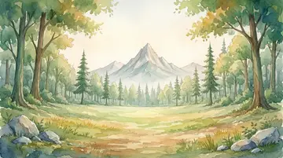

Nature Seed Начертайте път. Съберете ги.
Безплатен физичен пъзел с рисуване, който можете да играете в браузъра си. Начертайте линия с ограничено мастило и тя се превръща в рампа, мост или място за улавяне, което пренася Water Drop до Seed. Всяко решено ниво възстановява сцена от акварелна гора.
Излязла на 18 септември 2026 г. със 100 нива, звезди за ефективност на линиите и запазен напредък. Безплатна е в itch.io, Game Jolt и indiexpo; версията за iOS и Android е целта и още не е в магазините за приложения.
Рисувайтерисувайте с ограничено мастило
Свързванедоведете Water Drop до Seed
Разцветвърнете гората
В текущата версия
Нарисуваното от вас става част от нивото.
Всеки щрих, който потвърдите, се превръща в твърд обект с реални сблъсъци, а Water Drop и Seed реагират на него. Мастилото и броят линии са ограничени, така че формата на линията има значение.
Състояние на изданието Издаден на 18 септември 2026 г

Преглед на играта
Релаксиращ пъзел с рисуване за това как да съберете двама малки герои.
Идеята
Начертайте път, съберете Water Drop и Seed и гледайте как тихата скица оживява.
Стартова версия
100 играеми нива с рисуване с докосване, звезди за ефективност на линиите и напредък, който се запазва между сесиите.
Аудитория
Играчи, които обичат спокойни пъзели, лека физика, природни теми и мобилни сесии без стрес.
Статус
Излязла на 18 септември 2026 г. и безплатна за игра в браузъра. Целта е мобилна версия, която още не е в магазините за приложения.
Характеристики
Какво правите в Nature Seed.
Физически пътища, решавани с рисуване
Всеки пъзел започва с терен, Seed и Water Drop. Щрихът на играча се превръща в рампата, моста или точката за улавяне, които ги свързват.
Ясна обратна връзка от физиката
Water Drop и Seed се движат по начин, който можете да следите, така че неуспешният опит показва какво да промените.
Награди за възстановяване на гората
Завършете ниво и скицираната сцена се изпълва с цветове и растящи дървета.
Кратки нива, рисуване с докосване
Нивата са кратки и рисувате с докосване, което е подходящо за бързи сесии на телефон.
Цикъл на играта
Как се играе Nature Seed
- Стъпка 01Прочетете скицата
Потърсете наклони, пропуски и препятствия, както и най-сигурния начин да свържете двамата герои.
- Стъпка 02Начертайте линията
Начертайте линията си. Щрихът се превръща в рампа, водач или точка за улавяне за героите.
- Стъпка 03Потвърдете и наблюдавайте
Потвърдете линията и гледайте как героите реагират. Ще видите какво е проработило и какво не.
- Стъпка 04Разцветете или усъвършенствайте
Ако Water Drop стигне до Seed, гората се връща. Ако се разминат, начертайте отново с това, което току-що научихте.
История / свят
Скицирана гора чака вода.
Nature Seed започна като физичен пъзел с рисуване за възстановяването на нещо крехко, а не за бутане на предмети един към друг.
Героите са Seed, Water Drop и гора, която се връща от скица към цвят, докато играете. Всеки пъзел е малка задача: огледайте терена, начертайте път и помогнете на водата да стигне до нещо, което може да расте.
- Посока на дизайна
- Спокойна физика и видимо възстановяване
- Герои
- Water Drop и Seed
- Взаимодействие
- Рисуване с докосване
- Награда за майсторство
- Решение с една линия носи три звезди
С един поглед
Днес безплатна в браузъра, с мобилните устройства като цел.
Получавате ограничено мастило и ограничен брой линии. Използвайте ги, за да заведете Water Drop до Seed, после играйте нивото отново и свийте решението си до една линия за три звезди.
- Жанр
- Физичен пъзел с рисуване
- Целева платформа
- iOS / Android
- Формат на сесията
- Кратки спокойни нива
Изтегляне на материали
Материали на Nature Seed за пресата и създатели
WebP визуализации за отразяване в пресата, преглед от издатели и препратки в страници на магазини. Изходни файлове в пълна резолюция са налични при запитване.
Марка и герои
 Water DropСиният герой, който трябва да стигне до Seed.
Water DropСиният герой, който трябва да стигне до Seed.
 Персонаж SeedЗеленият герой, до когото Water Drop се опитва да стигне.
Персонаж SeedЗеленият герой, до когото Water Drop се опитва да стигне.
 Растеж на дърветаДървото, което расте след решаването.
Растеж на дърветаДървото, което расте след решаването.
 Горско менюФон на главното меню.
Горско менюФон на главното меню.
 Фон на игратаФон на ниво с празна игрална зона.
Фон на игратаФон на ниво с празна игрална зона.
Нива със скици, решавани чрез рисуване
 Ниво на скица 01Скица преди решаването.
Ниво на скица 01Скица преди решаването.
 Ниво на скица 02Скица преди решаването.
Ниво на скица 02Скица преди решаването.
 Ниво на скица 03Скица преди решаването.
Ниво на скица 03Скица преди решаването.
 Ниво на скица 04Скица преди решаването.
Ниво на скица 04Скица преди решаването.
 Ниво на скица 05Скица преди решаването.
Ниво на скица 05Скица преди решаването.
 Ниво на скица 06Скица преди решаването.
Ниво на скица 06Скица преди решаването.
 Ниво на скица 07Скица преди решаването.
Ниво на скица 07Скица преди решаването.
 Ниво на скица 08Скица преди решаването.
Ниво на скица 08Скица преди решаването.
 Ниво на скица 09Скица преди решаването.
Ниво на скица 09Скица преди решаването.
 Ниво на скица 10Скица преди решаването.
Ниво на скица 10Скица преди решаването.
Възстановени сцени от пъзела
 Възстановено ниво 01Възстановена след решаването.
Възстановено ниво 01Възстановена след решаването.
 Възстановено ниво 02Възстановена след решаването.
Възстановено ниво 02Възстановена след решаването.
 Възстановено ниво 03Възстановена след решаването.
Възстановено ниво 03Възстановена след решаването.
 Възстановено ниво 04Възстановена след решаването.
Възстановено ниво 04Възстановена след решаването.


Възстановено ниво 05Възстановена след решаването. Възстановено ниво 06Възстановена след решаването.
Възстановено ниво 06Възстановена след решаването.
 Възстановено ниво 07Възстановена след решаването.
Възстановено ниво 07Възстановена след решаването.
 Възстановено ниво 08Възстановена след решаването.
Възстановено ниво 08Възстановена след решаването.
 Възстановено ниво 09Възстановена след решаването.
Възстановено ниво 09Възстановена след решаването.
 Възстановено ниво 10Възстановена след решаването.
Възстановено ниво 10Възстановена след решаването.
Хронология на разработката
Хронология на разработката на Nature Seed
- Лято 2025Оригинална концепция
Nature Seed започна като идея за спокоен мобилен пъзел за свързването и възстановяването на природата.
- октомври 2025 гИдентичност на Seed и Water Drop
Завършихме дизайн документа и се спряхме на Seed и Water Drop като главни герои.
- декември 2025 гРазвитието започва
Планирахме първите нива на хартия, после започнахме да ги изграждаме и основните системи станаха играеми.
- февруари 2026 гГоляма обработка на черновите нива
Голямото грубо преминаване през нивата ни даде основа за по-късното шлифоване и балансиране.
- март-април 2026 гМеханика и преглед на ниво
Прегледахме допълнителните механики и черновите нива, после ги опростихме или преработихме, за да остане играта спокойна.
- юли 2026 гДоработка на вертикалния прототип
Юлската версия събра рисуване с ограничено мастило, звезди за ефективност, запазен напредък и стабилно генериране на линии в един играем цикъл.
- 18 септември 2026 гИзлизането на Nature Seed
Играта излезе под името Nature Seed със 100 нива, звезди за ефективност на линиите, запазен напредък и акварелни сцени на възстановяване.
ЧЗВ за Nature Seed
Често задавани въпроси за Nature Seed
Безплатна ли е Nature Seed?
Да. Можете да я играете безплатно в браузъра си в itch.io, Game Jolt и indiexpo.
Излязла ли е вече Nature Seed?
Да. Излезе на 18 септември 2026 г. със 100 нива. Версията за iOS и Android е целевата платформа и още не е в магазините за приложения.
Каква игра е Nature Seed?
Релаксиращ физичен пъзел с рисуване. Линиите, които чертаете, се превръщат в твърди предмети, които помагат на Water Drop и Seed да се срещнат.
Как се играе Nature Seed?
Огледайте терена, начертайте маршрут с ограниченото си мастило и гледайте как двамата герои реагират. Ако се разминат, начертайте отново. По-малко линии носят повече звезди, а една линия носи три.
Кой прави Nature Seed?
WillowinWorlds, независимо студио за мобилни пъзели и аркадни игри.
Мога ли да използвам прес материалите на Nature Seed?
Да, за пресата, за преглед от издатели и за препратки в магазини. Изходните файлове остават частни, освен ако не ни ги поискате.
Nature Seed Devlog
Какво се промени и кога
- Излизането на Nature Seed
Nature Seed излезе под окончателното си заглавие като безплатна браузър игра в itch.io, Game Jolt и indiexpo, със 100 нива, звезди за ефективност на линиите и запазен напредък.
- Доработка на възстановяването и стабилността на ниво 2
Ниво 2 вече използва двойката си производствени фонове, с по-надеждна настройка на нивото, проверки за сблъсък и обратна връзка при завършване.
- юли 2026 гИграема версия
Юлската версия съчета рисуването на линии с ограничено мастило, звездите за ефективност, запазения напредък и обратната връзка при възстановяването.
- април 2026 гПреработка на нивата
След вътрешен преглед преработихме няколко чернови нива, за да намалим сложността и да ги направим по-лесни за разчитане на телефон.
- март 2026 гПреглед на механиката
Тествахме допълнителни механики и премахнахме тези, заради които нивата се усещаха претъпкани.
- февруари 2026 гГоляма обработка на черновите нива
Първото голямо грубо преминаване през нивата се превърна в основа за по-късното шлифоване и балансиране.
- декември 2025 гРазвитието започва
Основните системи преминаха от дизайн документа към играема форма.
- Лято 2025Оригинална концепция
Първата версия на Nature Seed беше идея за спокоен пъзел за свързването и възстановяването на природата.